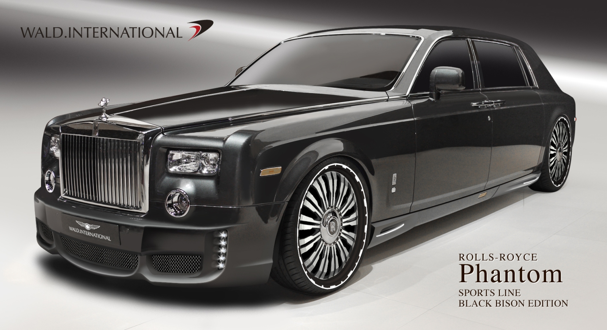
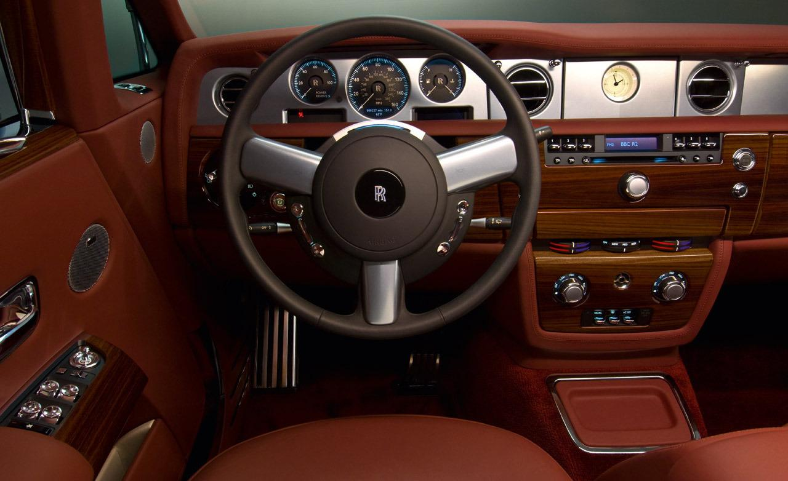
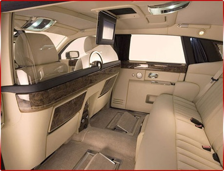

With its powerful stance, iconic proportions and state-of-the-art technology, the latest expression of Phantom is a timeless interpretation of the modern luxury motor car.
With its powerful stance, iconic proportions and state-of-the-art technology, Phantom is a timeless interpretation of the modern luxury motor car. Not only is Phantom the signature Rolls-Royce, it is also the very essence of the marque. The engine delivers the abundance of effortless power that has always made Rolls-Royce such a pleasure to drive.
With its low sill height and virtually flat floor, entering and exiting Phantom is truly graceful. The driver and passengers step effortlessly on to, rather than climb into the car. While the rear hinged coach doors and deep roof pillar add an extra sense of theatre and privacy for those in the rear.
The rear coach doors open to welcome you into a cosseting private interior that showcases the work of their master craftsmen. Above you is the Rolls-Royce Starlight Headliner, with up to 800 optic fibres positioned by hand to create the impression of a romantic night sky. You can configure the seating to your tastes, and add elements such as heated seats to keep you and fellow passengers relaxed on even the longest of journeys, or chromium-edged foot rests for extra comfort.